lorenz_partial_25d_additive_mse_uniform_p30_obsnoise005__lc_sweepProject: Lorenz_INDpartial_N25_D1_NormTrue_T3__JacobianODE
Launched: 2026-04-18T18:35:11Z
Completed: 2026-04-19T00:25:13Z
Outcome: complete_clean
Git: latent-JacobianODE @ f8e8560
Expected runs: 9
lorenz_partial_25d_additive_mse_uniform_p30_obsnoise005__lc_sweepDescription
Same base as lorenz_partial_25d_additive_mse_uniform_p30 with obs_noise=0.05. 9-run LC sweep (same axis as the obsnoise001 companion sweep); mirrors the obsnoise001__lc_sweep layout so results are directly comparable at a higher noise level.
Hypothesis
Bumping obs_noise from 0.01 to 0.05 makes the delay-embedded partial observation substantially harder to invert into a clean 3-D attractor chart: the directions the encoder contracts into z_dyn (top-3 obs PCs by variance, per earlier Jacobian analysis) now carry 25× more variance in latent-space noise. Expect val/trajectory_loss at the best LC to be higher than the obsnoise001 baseline, and λ_min to be less negative (strong- contraction direction harder to identify under denser noise). Whether the best LC weight shifts materially vs obsnoise001 is the main scientific question.
Success criteria
Swept axes (1): training.lightning.loop_closure_weight
Chosen run (by best_traj_loss): y7938e7x — traj_loss=0.00944, MASE=0.8888, R²=0.9749, LC loss=0.040, epoch=156.0
Swept-axis values at chosen run: training.lightning.loop_closure_weight=0.001
Runs analyzed: 9 (expected 9)
| run_idx | run_id | training.lightning.loop_closure_weight |
best_traj_loss | best_MASE | R² | LC loss | epoch |
|---|---|---|---|---|---|---|---|
| 4 | y7938e7x |
0.001 | 0.00944 | 0.8888 | 0.9749 | 0.040 | 156.0 |
| 3 | bxuw994m |
1.0e-04 | 0.01118 | 0.9439 | 0.9704 | 0.255 | 65.0 |
| 0 | cuscq7w2 |
0 | 0.01185 | 0.9654 | 0.9687 | 2.500 | 110.0 |
| 5 | f91ecsag |
0.01 | 0.01302 | 0.9982 | 0.9653 | 0.006 | 75.0 |
| 6 | 8jqwi5gc |
0.1 | 0.01397 | 1.0264 | 0.9628 | 0.000 | 144.0 |
| 7 | qt8nlbvw |
1 | 0.01510 | 1.1085 | 0.9599 | 0.000 | 98.0 |
| 2 | cxkzlvxb |
1.0e-05 | 0.01566 | 1.0301 | 0.9585 | 0.869 | 40.0 |
| 1 | dgh2ncgu |
1.0e-06 | 0.01860 | 1.0958 | 0.9507 | 1.976 | 28.0 |
| 8 | n5m6h4g9 |
10 | 0.02149 | 1.2698 | 0.9428 | 0.000 | 71.0 |
| Criterion | Verdict | Note |
|---|---|---|
| Best val traj_loss finite and within ~5× of the obsnoise001__lc_sweep baseline | Unknown | |
| λ_min at best LC still meaningfully negative (< -5) | Unknown | |
| No loop-closure explosion (max LC loss at best_tl < 10 across the sweep) | Unknown |
Automated verdicts use simple numeric-threshold parsing and may mis-classify qualitative criteria. The Discussion section below takes precedence.
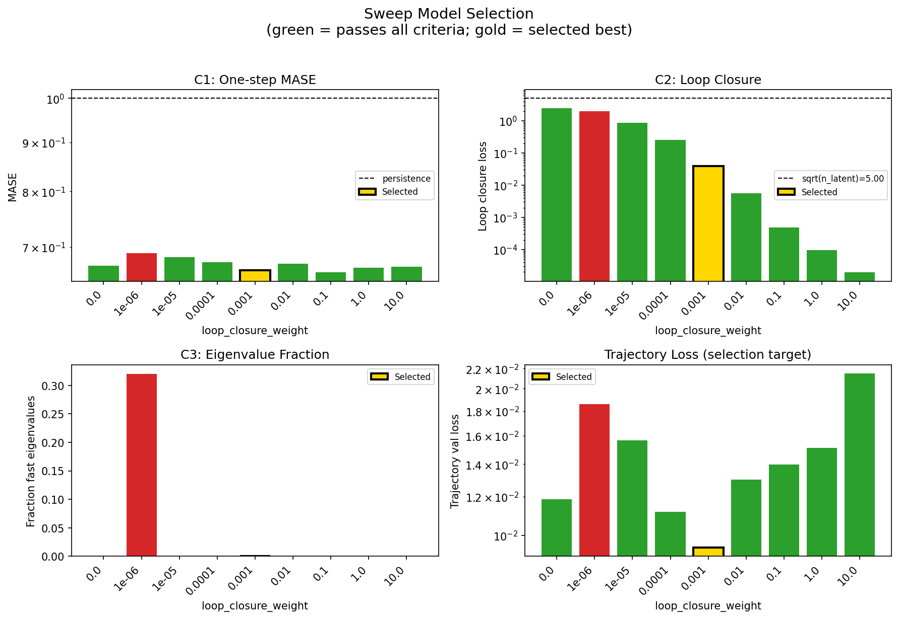
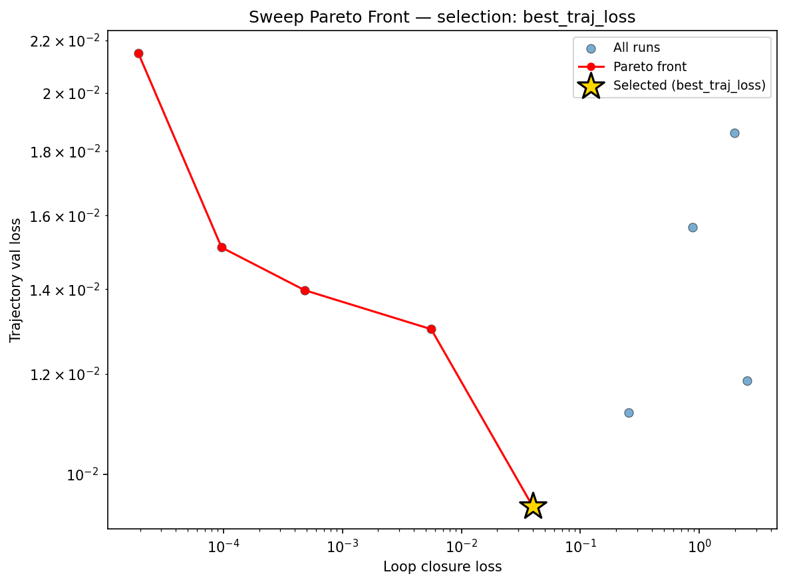
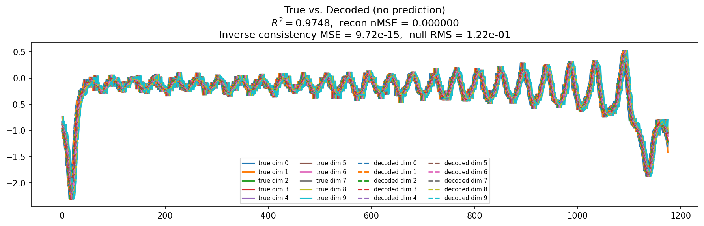
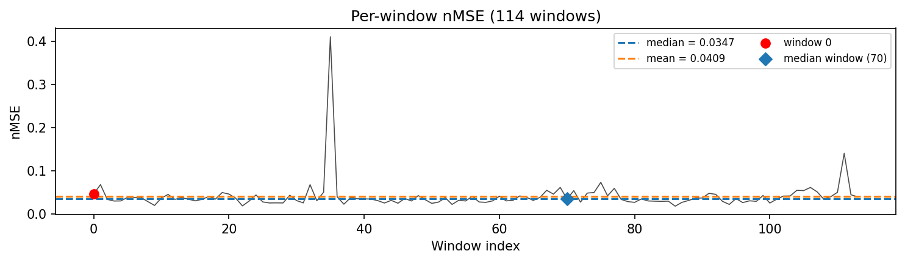
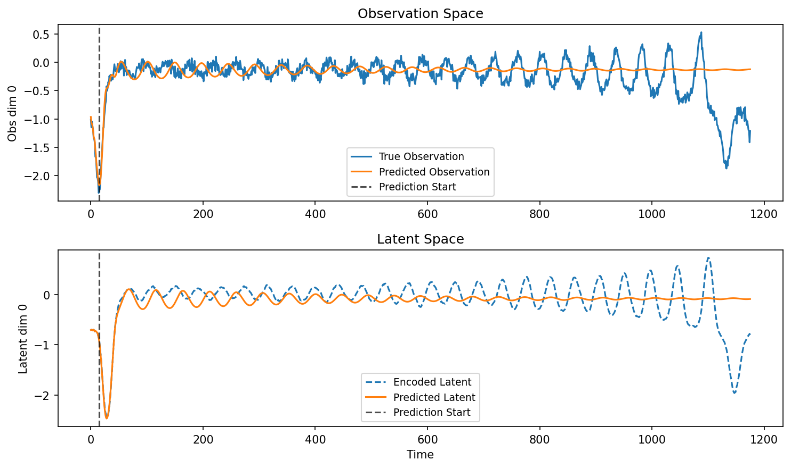
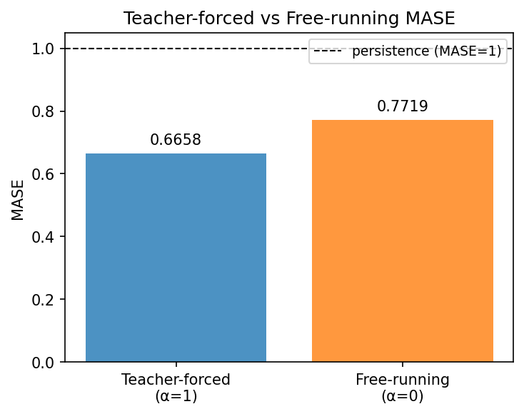
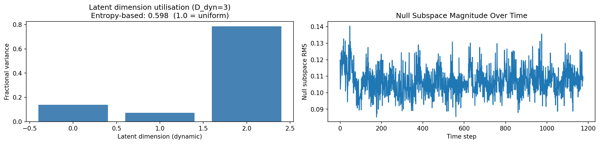
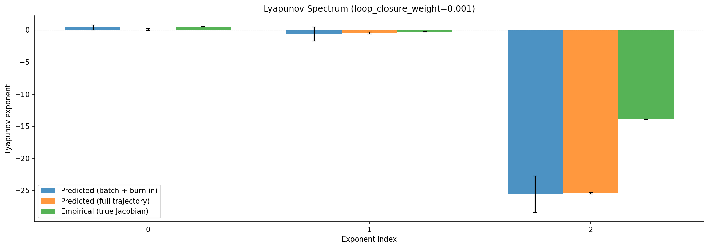
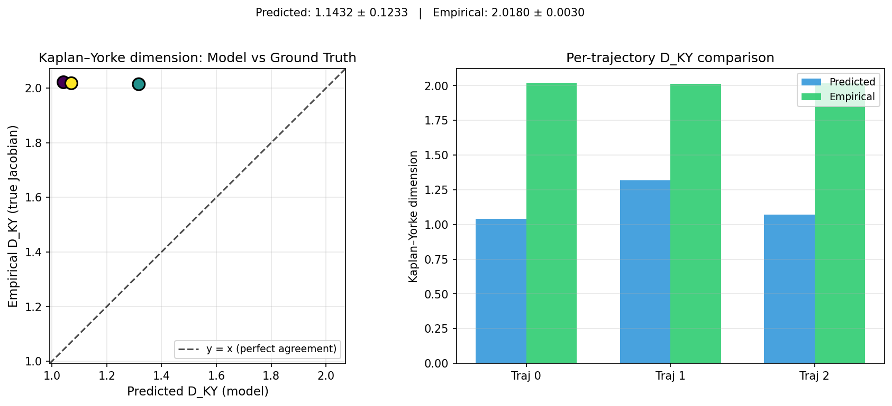
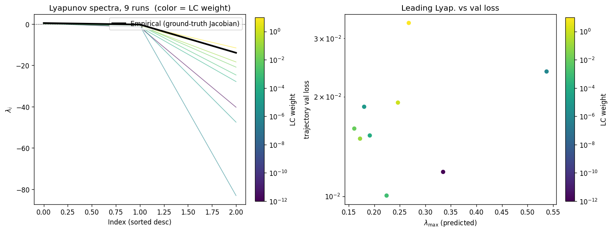
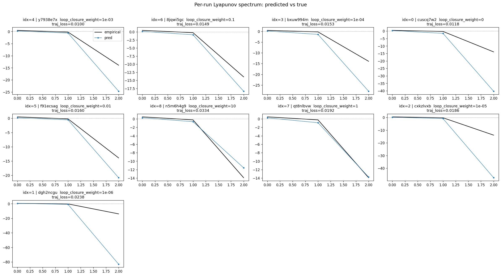
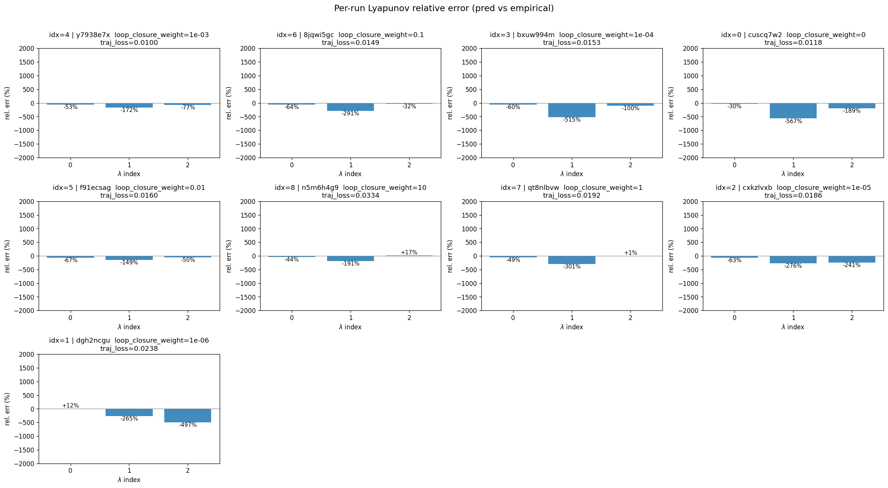
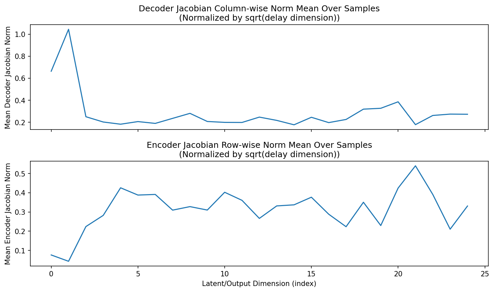
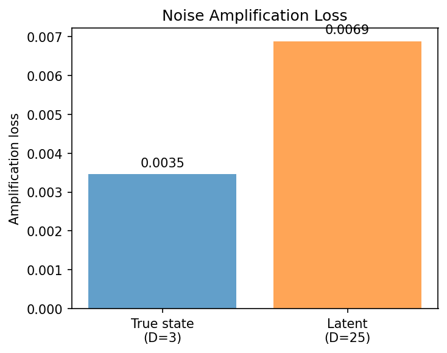
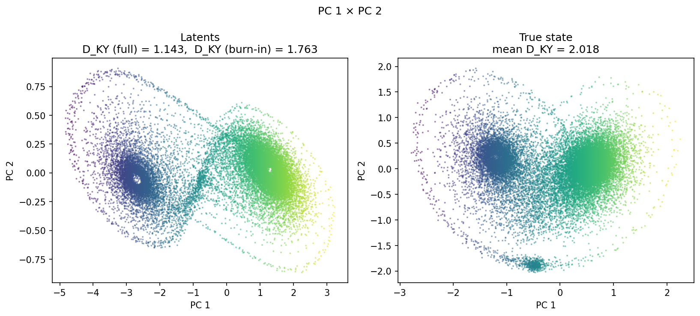
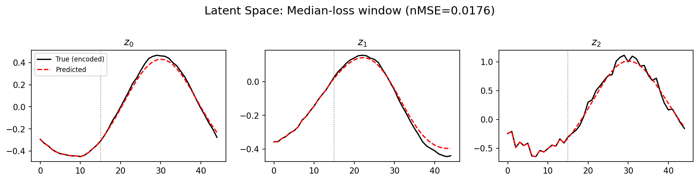
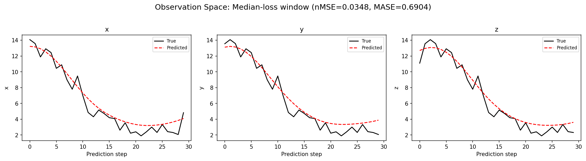
(to be written)
run_analytics stdoutrun_analyticsNo run_id provided — selecting best run from group 'lorenz_partial_25d_additive_mse_uniform_p30_obsnoise005__lc_sweep' ...
Found 9 total runs in JacobianODE/Lorenz_INDpartial_N25_D1_NormTrue_T3__JacobianODE (group=lorenz_partial_25d_additive_mse_uniform_p30_obsnoise005__lc_sweep)
All runs (state, loop_closure_weight, tangent_entropy_weight, kl_dyn_weight):
y7938e7x: state=finished, lc=0.001, te=0.0, kl_dyn=0.0
8jqwi5gc: state=finished, lc=0.1, te=0.0, kl_dyn=0.0
bxuw994m: state=finished, lc=0.0001, te=0.0, kl_dyn=0.0
cuscq7w2: state=finished, lc=0.0, te=0.0, kl_dyn=0.0
f91ecsag: state=finished, lc=0.01, te=0.0, kl_dyn=0.0
n5m6h4g9: state=finished, lc=10.0, te=0.0, kl_dyn=0.0
qt8nlbvw: state=finished, lc=1.0, te=0.0, kl_dyn=0.0
cxkzlvxb: state=finished, lc=1e-05, te=0.0, kl_dyn=0.0
dgh2ncgu: state=finished, lc=1e-06, te=0.0, kl_dyn=0.0
slurm_timeout_min not found in any run config — falling back to 180 min
Including y7938e7x (lc=0.001): use_all_runs=True (state=finished)
Including 8jqwi5gc (lc=0.1): use_all_runs=True (state=finished)
Including bxuw994m (lc=0.0001): use_all_runs=True (state=finished)
Including cuscq7w2 (lc=0.0): use_all_runs=True (state=finished)
Including f91ecsag (lc=0.01): use_all_runs=True (state=finished)
Including n5m6h4g9 (lc=10.0): use_all_runs=True (state=finished)
Including qt8nlbvw (lc=1.0): use_all_runs=True (state=finished)
Including cxkzlvxb (lc=1e-05): use_all_runs=True (state=finished)
Including dgh2ncgu (lc=1e-06): use_all_runs=True (state=finished)
Found 9 effectively-done sweep runs:
loop_closure_weight=0.0, tangent_entropy_weight=0.0, kl_dyn_weight=0.0 -> run_id=cuscq7w2
loop_closure_weight=1e-06, tangent_entropy_weight=0.0, kl_dyn_weight=0.0 -> run_id=dgh2ncgu
loop_closure_weight=1e-05, tangent_entropy_weight=0.0, kl_dyn_weight=0.0 -> run_id=cxkzlvxb
loop_closure_weight=0.0001, tangent_entropy_weight=0.0, kl_dyn_weight=0.0 -> run_id=bxuw994m
loop_closure_weight=0.001, tangent_entropy_weight=0.0, kl_dyn_weight=0.0 -> run_id=y7938e7x
loop_closure_weight=0.01, tangent_entropy_weight=0.0, kl_dyn_weight=0.0 -> run_id=f91ecsag
loop_closure_weight=0.1, tangent_entropy_weight=0.0, kl_dyn_weight=0.0 -> run_id=8jqwi5gc
loop_closure_weight=1.0, tangent_entropy_weight=0.0, kl_dyn_weight=0.0 -> run_id=qt8nlbvw
loop_closure_weight=10.0, tangent_entropy_weight=0.0, kl_dyn_weight=0.0 -> run_id=n5m6h4g9
n_dims=25, n_latent=25, n_dyn=3, dt=0.0150
run=cuscq7w2: DiagnosticMetrics(one_step_mase=0.6690186858177185, loop_closure_loss=2.5000617504119873, fast_eigenvalue_fraction=0.0, trajectory_val_loss=0.011846988461911678) (from W&B history)
run=dgh2ncgu: DiagnosticMetrics(one_step_mase=0.6897918581962585, loop_closure_loss=1.9762285947799683, fast_eigenvalue_fraction=0.3199999928474426, trajectory_val_loss=0.018603092059493065) (from W&B history)
run=cxkzlvxb: DiagnosticMetrics(one_step_mase=0.6836985945701599, loop_closure_loss=0.8694607615470886, fast_eigenvalue_fraction=0.0, trajectory_val_loss=0.015656791627407074) (from W&B history)
run=bxuw994m: DiagnosticMetrics(one_step_mase=0.6750456690788269, loop_closure_loss=0.2545514404773712, fast_eigenvalue_fraction=0.0, trajectory_val_loss=0.011179681867361069) (from W&B history)
run=y7938e7x: DiagnosticMetrics(one_step_mase=0.6625606417655945, loop_closure_loss=0.03966875374317169, fast_eigenvalue_fraction=0.0, trajectory_val_loss=0.009436698630452156) (from W&B history)
run=f91ecsag: DiagnosticMetrics(one_step_mase=0.6726009845733643, loop_closure_loss=0.005578300449997187, fast_eigenvalue_fraction=0.0, trajectory_val_loss=0.01301533356308937) (from W&B history)
run=8jqwi5gc: DiagnosticMetrics(one_step_mase=0.6587134599685669, loop_closure_loss=0.000482161674881354, fast_eigenvalue_fraction=0.0, trajectory_val_loss=0.013971555978059769) (from W&B history)
run=qt8nlbvw: DiagnosticMetrics(one_step_mase=0.6658934354782104, loop_closure_loss=9.67189043876715e-05, fast_eigenvalue_fraction=0.0, trajectory_val_loss=0.015100440010428429) (from W&B history)
run=n5m6h4g9: DiagnosticMetrics(one_step_mase=0.6679693460464478, loop_closure_loss=1.9354698451934382e-05, fast_eigenvalue_fraction=0.0, trajectory_val_loss=0.021486254408955574) (from W&B history)
Ranking method: best_traj_loss
Best run ID: y7938e7x
Best loop_closure_weight: 0.001
Best tangent_entropy_weight: 0.0
Best kl_dyn_weight: 0.0
Best traj loss: 0.009437
Criteria applied: ['C1', 'C2', 'C3']
Surviving: 8 / 9
Auto-selected run_id: y7938e7x
======================================================================
PARETO FRONTIER RUNS (5 runs)
======================================================================
Run ID LC Loss Traj Val Loss
------------ -------------- --------------
n5m6h4g9 0.000019 0.021486
qt8nlbvw 0.000097 0.015100
8jqwi5gc 0.000482 0.013972
f91ecsag 0.005578 0.013015
y7938e7x 0.039669 0.009437 <-- selected
======================================================================
RANKING METHOD COMPARISON (over 8 survivors)
======================================================================
Method Run ID LC Loss Traj Val Loss
---------------------- ------------ -------------- --------------
best_traj_loss y7938e7x 0.039669 0.009437 <-- active
pareto_knee f91ecsag 0.005578 0.013015
geo_rank y7938e7x 0.039669 0.009437
minimax_rank f91ecsag 0.005578 0.013015
geo_log_score y7938e7x 0.039669 0.009437
minimax_log_score 8jqwi5gc 0.000482 0.013972
======================================================================
Loading run y7938e7x from JacobianODE/Lorenz_INDpartial_N25_D1_NormTrue_T3__JacobianODE ...
Train dataset shape: torch.Size([24882, 45, 25])
Validation dataset shape: torch.Size([7917, 45, 25])
Test dataset shape: torch.Size([3393, 45, 25])
Train trajectories dataset shape: torch.Size([22, 1176, 25])
Validation trajectories dataset shape: torch.Size([7, 1176, 25])
Test trajectories dataset shape: torch.Size([3, 1176, 25])
Loading checkpoint epoch=156-step=31400.ckpt...
Computing reconstruction ...
Computing MASE ...
Teacher-forced MASE: 0.6658
Free-running MASE: 0.7719
Computing latent utilization ...
Entropy-based utilization: 0.598
Null subspace mean RMS: 1.071286e-01
Computing Lyapunov exponents ...
Computing full-trajectory Lyapunov (3 test trajs, T=1176) ...
Predicted Lyapunov exponents (batch+burn-in, 128 windowed trajs):
λ_1 = +0.3892 ± 0.3699
λ_2 = -0.6446 ± 1.0843
λ_3 = -25.5664 ± 2.8187
Predicted Lyapunov exponents (full-length, 3 test trajs):
λ_1 = +0.0736 ± 0.0896
λ_2 = -0.4662 ± 0.1485
λ_3 = -25.4183 ± 0.1366
Empirical Lyapunov exponents (mean ± std):
λ_1 = +0.4677 ± 0.0259
λ_2 = -0.2173 ± 0.0549
λ_3 = -13.9174 ± 0.0513
Mean KY dim (predicted): 1.143 ± 0.123
Mean KY dim (empirical): 2.018 ± 0.003
Mean KY dim (burn-in): 1.763 ± 0.486
Computing prediction windows ...
Windows: 114 — nMSE min=0.0181, median=0.0347, mean=0.0409, max=0.4100
Computing long trajectory prediction ...
Computing encoder/decoder Jacobians ...
encoder_jacobian: (128, 25, 25)
decoder_jacobian: (128, 25, 25)
Computing amplification loss ...
Amplification loss — True state: 0.003459
Amplification loss — Latent: 0.006880